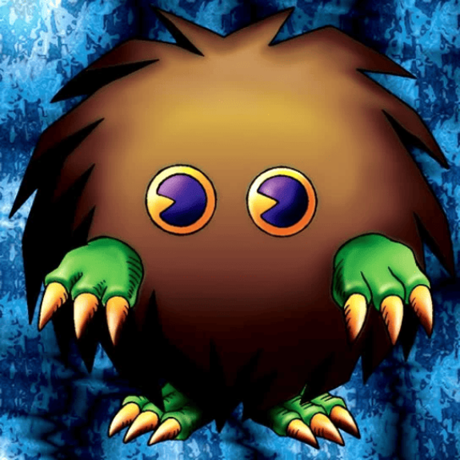
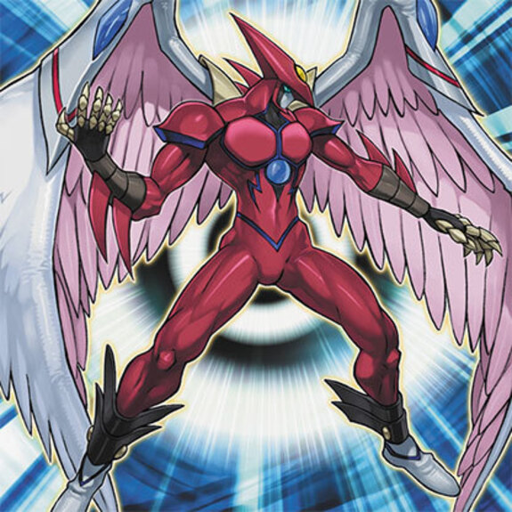

-
Mago Negro

O mago definitivo em termos de ataque e defesa..
ATK/ 2500 DEF/ 2100 -
Dragão Branco de Olhos Azuis

Este dragão lendário é uma poderosa máquina de destruição. Praticamente invencível, muito poucos enfrentaram esta magnífica criatura e viveram para contar a história.
ATK/ 3000 DEF/ 2500 -
Dark Magician Girl

Este card ganha 300 de ATK para cada "Mago Negro" ou "Mago do Caos Negro" no Cemitério de qualquer jogador
ATK/ 2000 DEF/ 1700 -
Mago do Tempo

Uma vez por turno: você pode lançar uma moeda e escolher cara ou coroa. Se você ganhar, destrua todos os monstros que seu oponente controla. Se você perder, destrua tantos monstros que você controla quanto possível e, se isso acontecer, sofra dano igual à metade do ATK total que esses monstros destruídos tinham enquanto estavam com a face para cima no campo.
ATK/ 500 DEF/ 400 -
Kuriboh
Durante o cálculo de dano, se um monstro do seu oponente atacar (Efeito Rápido): você pode descartar este card; você não sofre dano de batalha dessa batalha.
ATK/ 300 DEF/ 200 -
Caveira Invocada

Um demônio com poderes das trevas para confundir o inimigo. Entre os monstros do tipo demônio, é dos mais fortes.(Este card é tratado como um card "Arquidemônio".)
ATK/ 2500 DEF/ 1200 -
Exodia, O Proibido

Se você tiver "Perna Direita de "O Proibido"", "Perna Esquerda de "O Proibido"", "Braço Direito de "O Proibido"" e "Braço Esquerdo de "O Proibido"", além de este card na sua mão, você vence o Duelo.
ATK/ 1000 DEF/ 1000 -
Obelisco, o Atormentador

Requer 3 Tributos para ser Invocado por Invocação-Normal (não pode ser Baixado Normalmente). A Invocação-Normal deste card não pode ser negada. Quando Invocado por Invocação-Normal, cards e efeitos não podem ser ativados. Nenhum duelista pode escolher este card como alvo de efeitos de card. Uma vez por turno, durante a Fase Final, se este card foi Invocado por Invocação-Especial: envie-o para o Cemitério. Você pode oferecer 2 monstros como Tributo; destrua todos os monstros que seu oponente controla. Este card não pode declarar um ataque no turno em que este efeito for ativado.
ATK/ 4000 DEF/ 4000 -
Dragão Arco-Íris

Requer 3 Tributos para ser Invocado por Invocação-Normal (não pode ser Baixado Normalmente). A Invocação-Normal deste card não pode ser negada. Quando Invocado por Invocação-Normal, cards e efeitos não podem ser ativados. Uma vez por turno, durante a Fase Final, se este card foi Invocado por Invocação-Especial: envie-o para o Cemitério. Ganha 1000 de ATK/DEF para cada card na sua mão. Se um ou mais monstros forem Invocados por Invocação-Normal ou Especial no campo do seu oponente em Posição de Ataque: esses monstros perdem 2000 de ATK e, depois, se algum deles tiver o ATK reduzido a 0 como resultado, destrua-o
ATK/ ? DEF/ ? -
Homem-Alado da Chama Brilhante, o HERÓI do Elemento

(Este card deve ser sempre considerado como um card "Cristalino(a) Definitivo(a)".) Não pode ser Invocado por Invocação-Normal/Baixado. Deve ser Invocado por Invocação-Especial (da sua mão) ao ter 7 cards "Fera Cristalina" com nomes diferentes no seu campo e/ou Cemitério. Este card não pode ativar os seguintes efeitos no turno em que for Invocado por Invocação-Especial. (Efeito Rápido): você pode enviar para o Cemitério todos os monstros "Fera Cristalina" que você controla; este card ganha 1000 de ATK para cada monstro enviado para o Cemitério. Você pode banir todos os monstros "Fera Cristalina" do seu Cemitério; embaralhe no Deck todos os cards no campo.
ATK/ 2500 DEF/ 2100 -
Herói Elementar, Neos do Ar
"Elemental Hero Neos" + "Neo-Spacian Air Hummingbird" Esta carta somente pode ser Special Summoned do seu Extra Deck por retornar as cartas citadas do seu lado do campo ao Deck ao Deck (Você não utiliza "Polymerization"). Enquanto seus LPs estiverem menores que os LPs do seu oponente, esta carta ganha ATK igual àquela diferença. Esta carta retorna ao Extra Deck durante a Fase Final.
ATK/ 2500 DEF/ 2000